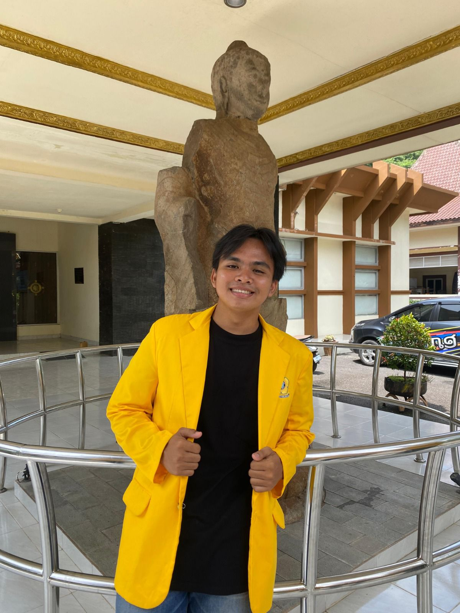

Mahasiswa Sistem Komputer Universitas Sriwijaya. Berpengalaman dalam Cloud Computing (AlmaLinux), Network Infrastructure, dan Machine Learning.

Pemrosesan data JSON/XML menggunakan AlmaLinux 9, SSH remote via Paramiko, dan Socket Programming.
Analisis infrastruktur jaringan selama magang di PT Bukit Asam.